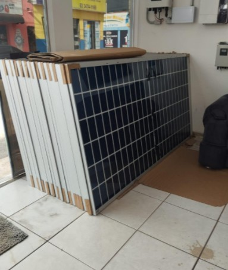
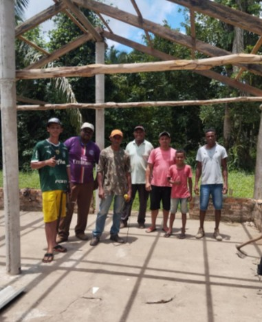

← Voltar para projetos
Luz de produção agroecológica
Promover o fortalecimento territorial da comunidade quilombola Ilha de São Vicente, a produção de energia limpa, sem grandes impactos ambientais, e melhores condições para a produção agroecológica e sustentável.


